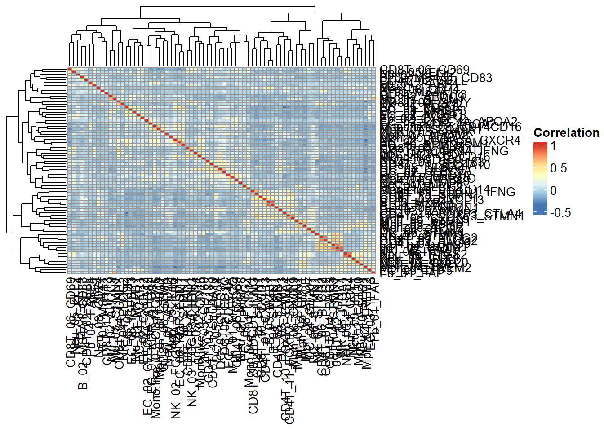
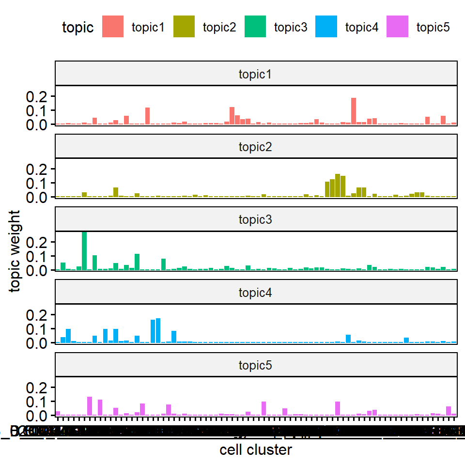
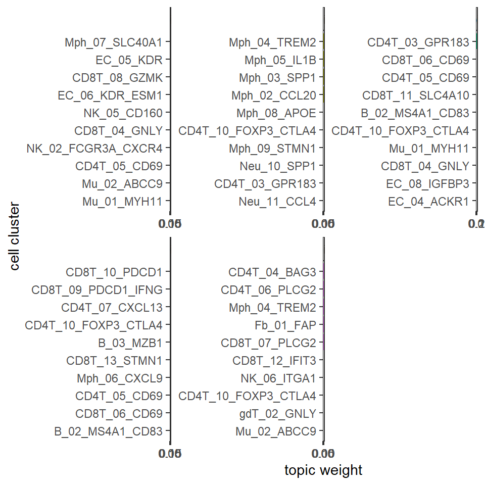
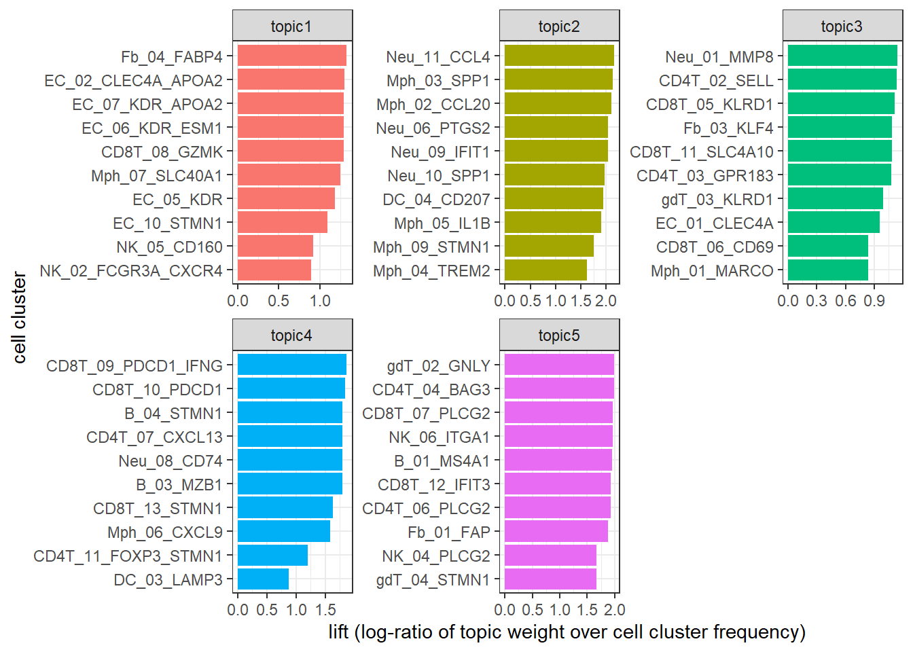
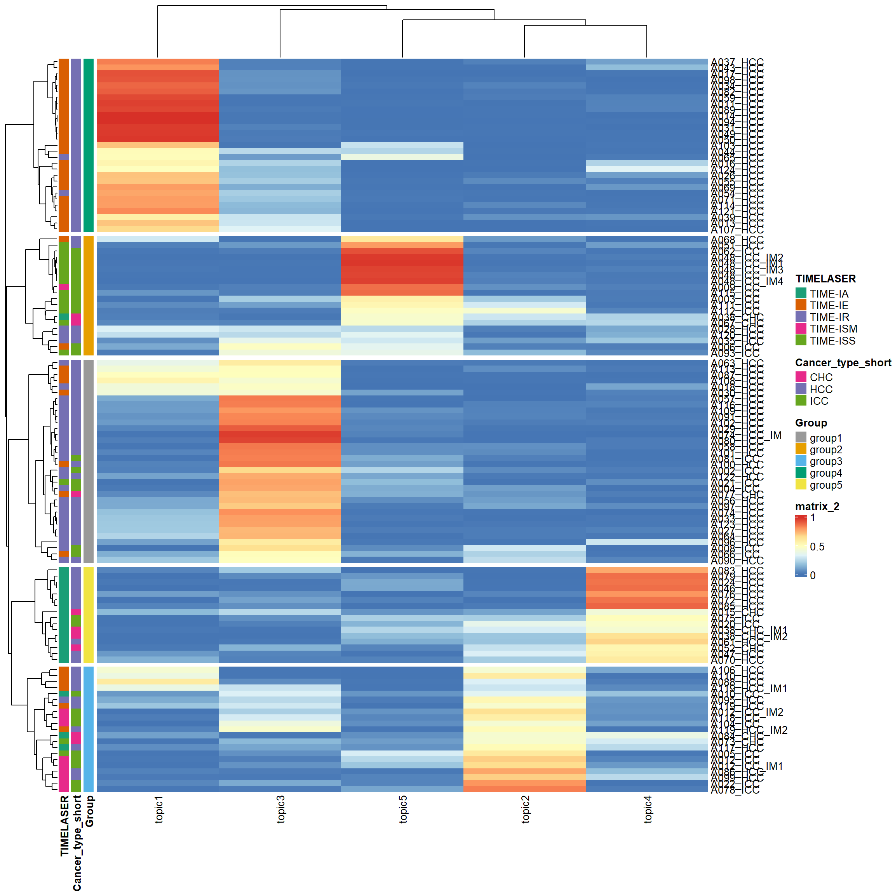
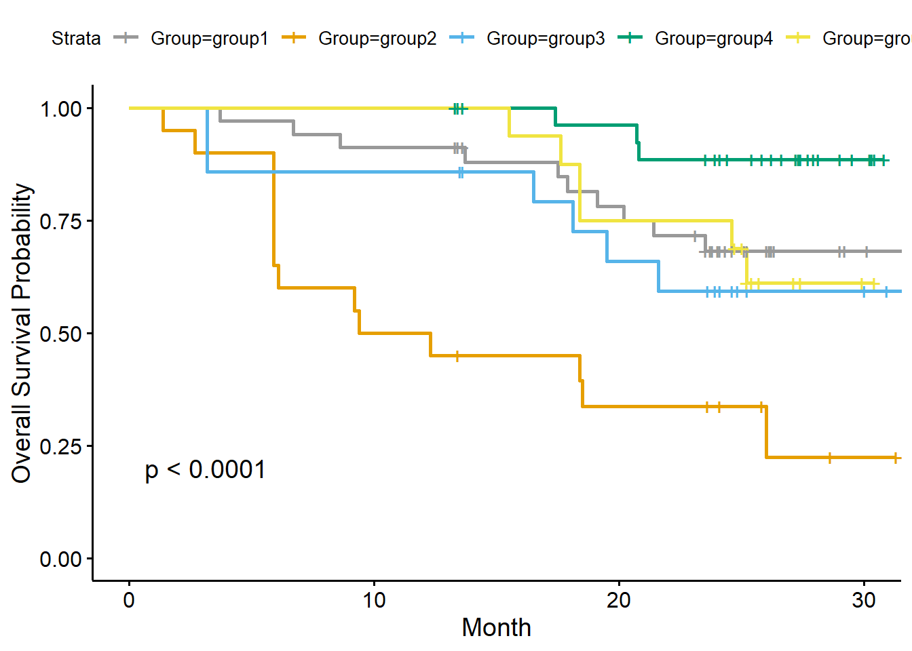
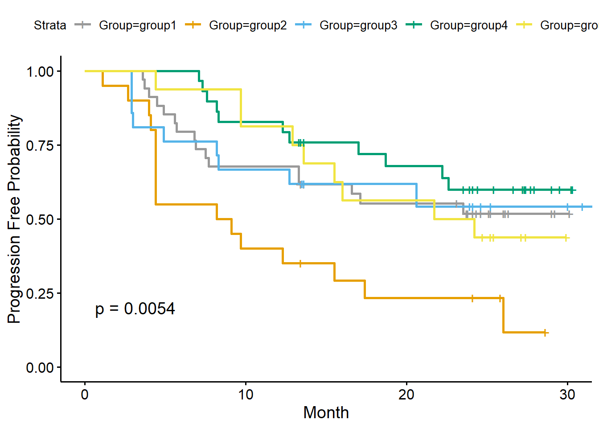
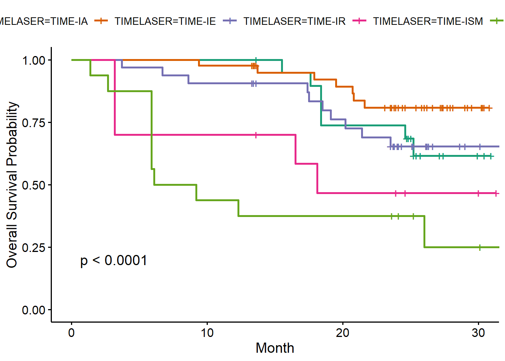
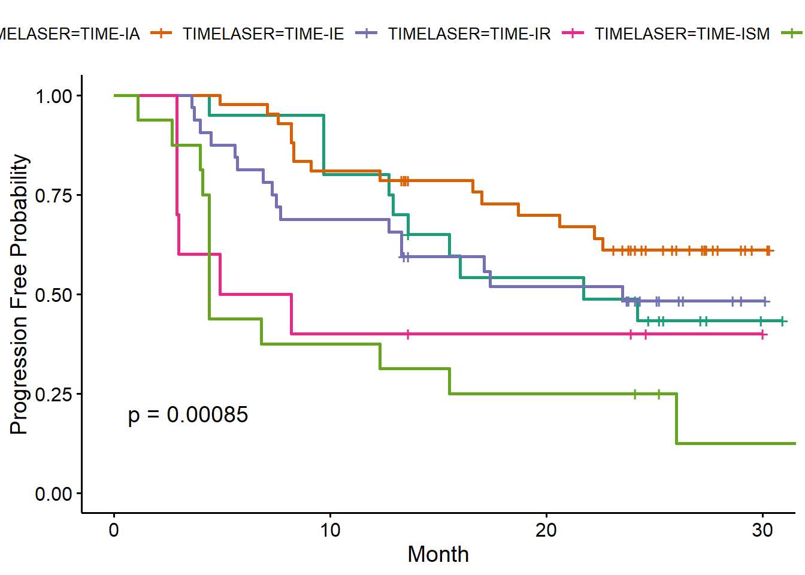

Xiyu Peng
liver cancer data
heatmap



TIME-IA
TIME-ISM
TIME-ISS
TIME-IE
TIME-IR
Extract Gamma
Incorporate Metadata
## [1] 120 147
##
## group1 group2 group3 group4 group5
## 34 20 21 29 16

## Call:
## coxph(formula = os ~ topic1, data = clinical_data_merge_sub)
##
## n= 120, number of events= 40
##
## coef exp(coef) se(coef) z Pr(>|z|)
## topic1 -2.1152 0.1206 0.7027 -3.01 0.00261 **
## ---
## Signif. codes: 0 '***' 0.001 '**' 0.01 '*' 0.05 '.' 0.1 ' ' 1
##
## exp(coef) exp(-coef) lower .95 upper .95
## topic1 0.1206 8.291 0.03043 0.4781
##
## Concordance= 0.675 (se = 0.039 )
## Likelihood ratio test= 12.87 on 1 df, p=3e-04
## Wald test = 9.06 on 1 df, p=0.003
## Score (logrank) test = 10.49 on 1 df, p=0.001## Call:
## coxph(formula = os ~ topic2, data = clinical_data_merge_sub)
##
## n= 120, number of events= 40
##
## coef exp(coef) se(coef) z Pr(>|z|)
## topic2 1.1002 3.0047 0.6513 1.689 0.0912 .
## ---
## Signif. codes: 0 '***' 0.001 '**' 0.01 '*' 0.05 '.' 0.1 ' ' 1
##
## exp(coef) exp(-coef) lower .95 upper .95
## topic2 3.005 0.3328 0.8384 10.77
##
## Concordance= 0.618 (se = 0.043 )
## Likelihood ratio test= 2.55 on 1 df, p=0.1
## Wald test = 2.85 on 1 df, p=0.09
## Score (logrank) test = 2.92 on 1 df, p=0.09## Call:
## coxph(formula = os ~ topic3, data = clinical_data_merge_sub)
##
## n= 120, number of events= 40
##
## coef exp(coef) se(coef) z Pr(>|z|)
## topic3 -0.7325 0.4807 0.5773 -1.269 0.204
##
## exp(coef) exp(-coef) lower .95 upper .95
## topic3 0.4807 2.08 0.1551 1.49
##
## Concordance= 0.6 (se = 0.046 )
## Likelihood ratio test= 1.74 on 1 df, p=0.2
## Wald test = 1.61 on 1 df, p=0.2
## Score (logrank) test = 1.63 on 1 df, p=0.2## Call:
## coxph(formula = os ~ topic4, data = clinical_data_merge_sub)
##
## n= 120, number of events= 40
##
## coef exp(coef) se(coef) z Pr(>|z|)
## topic4 -0.5238 0.5923 0.7161 -0.731 0.465
##
## exp(coef) exp(-coef) lower .95 upper .95
## topic4 0.5923 1.688 0.1456 2.41
##
## Concordance= 0.509 (se = 0.041 )
## Likelihood ratio test= 0.58 on 1 df, p=0.4
## Wald test = 0.54 on 1 df, p=0.5
## Score (logrank) test = 0.54 on 1 df, p=0.5## Call:
## coxph(formula = os ~ topic5, data = clinical_data_merge_sub)
##
## n= 120, number of events= 40
##
## coef exp(coef) se(coef) z Pr(>|z|)
## topic5 2.9958 20.0011 0.4784 6.262 3.81e-10 ***
## ---
## Signif. codes: 0 '***' 0.001 '**' 0.01 '*' 0.05 '.' 0.1 ' ' 1
##
## exp(coef) exp(-coef) lower .95 upper .95
## topic5 20 0.05 7.831 51.08
##
## Concordance= 0.76 (se = 0.038 )
## Likelihood ratio test= 30.22 on 1 df, p=4e-08
## Wald test = 39.21 on 1 df, p=4e-10
## Score (logrank) test = 51.71 on 1 df, p=6e-13## Call:
## coxph(formula = pfs ~ topic1, data = clinical_data_merge_sub)
##
## n= 120, number of events= 61
##
## coef exp(coef) se(coef) z Pr(>|z|)
## topic1 -0.9281 0.3953 0.4401 -2.109 0.0349 *
## ---
## Signif. codes: 0 '***' 0.001 '**' 0.01 '*' 0.05 '.' 0.1 ' ' 1
##
## exp(coef) exp(-coef) lower .95 upper .95
## topic1 0.3953 2.53 0.1668 0.9365
##
## Concordance= 0.631 (se = 0.035 )
## Likelihood ratio test= 5 on 1 df, p=0.03
## Wald test = 4.45 on 1 df, p=0.03
## Score (logrank) test = 4.58 on 1 df, p=0.03## Call:
## coxph(formula = pfs ~ topic2, data = clinical_data_merge_sub)
##
## n= 120, number of events= 61
##
## coef exp(coef) se(coef) z Pr(>|z|)
## topic2 0.6687 1.9516 0.5517 1.212 0.226
##
## exp(coef) exp(-coef) lower .95 upper .95
## topic2 1.952 0.5124 0.6619 5.755
##
## Concordance= 0.611 (se = 0.038 )
## Likelihood ratio test= 1.37 on 1 df, p=0.2
## Wald test = 1.47 on 1 df, p=0.2
## Score (logrank) test = 1.48 on 1 df, p=0.2## Call:
## coxph(formula = pfs ~ topic3, data = clinical_data_merge_sub)
##
## n= 120, number of events= 61
##
## coef exp(coef) se(coef) z Pr(>|z|)
## topic3 -0.6095 0.5436 0.4651 -1.31 0.19
##
## exp(coef) exp(-coef) lower .95 upper .95
## topic3 0.5436 1.84 0.2185 1.353
##
## Concordance= 0.582 (se = 0.038 )
## Likelihood ratio test= 1.83 on 1 df, p=0.2
## Wald test = 1.72 on 1 df, p=0.2
## Score (logrank) test = 1.73 on 1 df, p=0.2## Call:
## coxph(formula = pfs ~ topic4, data = clinical_data_merge_sub)
##
## n= 120, number of events= 61
##
## coef exp(coef) se(coef) z Pr(>|z|)
## topic4 -0.6075 0.5447 0.5985 -1.015 0.31
##
## exp(coef) exp(-coef) lower .95 upper .95
## topic4 0.5447 1.836 0.1686 1.76
##
## Concordance= 0.505 (se = 0.037 )
## Likelihood ratio test= 1.14 on 1 df, p=0.3
## Wald test = 1.03 on 1 df, p=0.3
## Score (logrank) test = 1.04 on 1 df, p=0.3## Call:
## coxph(formula = pfs ~ topic5, data = clinical_data_merge_sub)
##
## n= 120, number of events= 61
##
## coef exp(coef) se(coef) z Pr(>|z|)
## topic5 2.495 12.127 0.438 5.697 1.22e-08 ***
## ---
## Signif. codes: 0 '***' 0.001 '**' 0.01 '*' 0.05 '.' 0.1 ' ' 1
##
## exp(coef) exp(-coef) lower .95 upper .95
## topic5 12.13 0.08246 5.139 28.62
##
## Concordance= 0.688 (se = 0.032 )
## Likelihood ratio test= 25.38 on 1 df, p=5e-07
## Wald test = 32.45 on 1 df, p=1e-08
## Score (logrank) test = 39.05 on 1 df, p=4e-10